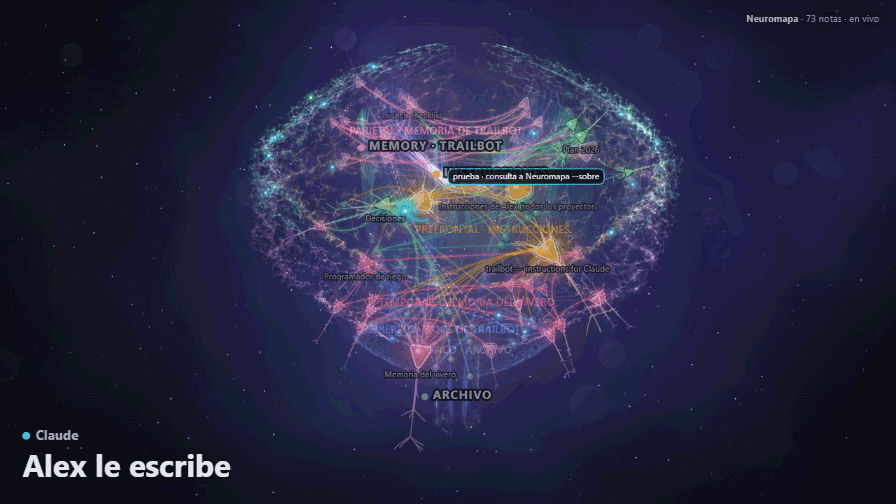

🧠
Un mapa en vivoA live map
Ves qué nota lee Claude, qué archivo edita, qué agente lanzó y en qué chat, mientras pasa.See which note Claude reads, which file it edits, which agent it starts and in which chat, as it happens.
Neuromapa dibuja la memoria de Claude Code como un cerebro 3D que se mueve en vivo mientras trabaja, revisa que tus notas sigan siendo ciertas y le da a Claude lo que ya sabe antes de que lo vuelva a averiguar. Neuromapa draws Claude Code's memory as a live 3D brain that moves while Claude works, checks that your notes are still true, and hands Claude what it already knows before it looks it up again.

Junta la memoria de Claude Code, tus CLAUDE.md y los documentos que elijas, y trabaja con ellos en tu computadora.It gathers Claude Code's memory, your CLAUDE.md files and the documents you choose, and works with them on your computer.
Ves qué nota lee Claude, qué archivo edita, qué agente lanzó y en qué chat, mientras pasa.See which note Claude reads, which file it edits, which agent it starts and in which chat, as it happens.
Avisa enlaces rotos, notas repetidas, citas archivo:línea que se corrieron, commits que no existen y datos que dejaron de ser ciertos.Flags broken links, duplicate notes, file:line references that drifted, commits that don't exist and facts that stopped being true.
Le dice qué notas leer primero, avisa los datos viejos y nombra el código que esas notas citan, para comprobarlo.Tells Claude which notes to read first, warns about stale facts and names the code those notes cite, so it can check.
Lo que se usa junto se conecta y lo que no se repite se olvida, como un cerebro. Cada uno aprende en su propia computadora.What gets used together connects and what isn't repeated fades, like a brain. Everyone learns on their own computer.
Funciones y clases con sus renglones en 12 lenguajes, y quién llama a quién, sin instalar nada más.Functions and classes with their lines in 12 languages, and who calls whom, with nothing else to install.
Cuando Claude crea una memoria parecida a otra, cuando dos chats editan el mismo archivo o cuando aparece un problema nuevo.When Claude writes a memory similar to another, when two chats edit the same file or when a new problem shows up.
450 corridas reales de Claude Code sobre 50 preguntas de un proyecto grande, juzgadas por 30 jueces ciegos.450 real Claude Code runs over 50 questions from a large project, graded by 30 blind judges.
Hace falta Python 3.10 o más nuevo y git.You need Python 3.10 or newer, and git.
En una terminal, suma el plugin a Claude Code:In a terminal, add the plugin to Claude Code:
claude plugin marketplace add lumiel777/neuromapa
claude plugin install neuromapa@neuromapaCierra y vuelve a abrir Claude Code: el plugin entra recién ahí.Close and reopen Claude Code: the plugin loads then.
En una sesión de Claude Code, abre el mapa:In a Claude Code session, open the map:
/neuromapa:abrirSin notas todavía, /neuromapa:abrir --demo muestra uno con notas de ejemplo.No notes yet? /neuromapa:abrir --demo shows one with sample notes.
Tus notas son tuyas y se quedan en tu computadora.Your notes are yours and stay on your computer.
Neuromapa nace de su propio trabajo con Claude Code y se publica libre para quien lo quiera usar. Preguntas, errores e ideas: en Neuromapa grew out of their own work with Claude Code and is published for free for anyone who wants it. Questions, bugs and ideas: on GitHub Issues.